Objetivo: Entender o processo de regionalização do território brasileiro, seus objetivos e
suas diferenças.
Digite seu nome
Introdução
Na aula sobre a formação do território brasileiro vimos como o Brasil
ganhou os contornos atuais com suas fronteiras e o peso do tipo de colonização que tivemos para a sociedade
e junto com seu território no período atual.
Nesta aula teremos uma introdução no processo de regionalizar um espaço, ou seja, dividi-lo em regiões.
Veremos que se trata de algo muito mais complexo do que se pensa. Vamos iniciar os estudos sobre três
possibilidades de dividir o Brasil e porque isso é muito importante para o planejamento da sociedade.
O Brasil e suas diferenças regionais
Quando aprendemos a observar por nós mesmos a realidade, tudo faz mais sentido. Os livros podem nos ajudar,
mas a vontade de compreender porque determinada realidade é do jeito que é, questioná-la, torna-se uma
prática fundamental para o ser humano.
O Brasil é imenso e suas regiões são incrivelmente desiguais entre si. Não há nada de mais ser diferente um
do outro, mas no caso do território, ele é um quadro de vida, um chão habitado por uma população. Assim como
nenhum indivíduo escolhe o local de nascimento, nasce ao acaso, o território deve tratar a todos igualmente,
oferendo os objetos e infraestruturas adequadas a todos os habitantes, sem exceção. Por isso o território
não pode perpetuar diferenças.
O território brasileiro sofreu vários transformações durante os séculos. Veja o mapa abaixo:
Lembra que o território foi considerado um arquipélago econômico? Por conta da sua falta de integração entre as regiões e
ainda mais com a colonização de Portugal que exigia e organizava toda a produção daqui para a Metrópole.
×
"O Brasil foi, durante muitos séculos, um grande arquipélago, formado por subespaços, que
evoluíram, segundo lógicas próprias, ditadas em grande parte por suas relações com o mundo
exterior. Havia, sem dúvida, para cada um desses subespaços, polos dinâmicos internos. Estes,
porém, tinham entre si escassa relação, não sendo interdependentes". Mílton Santos. A Urbanização brasileira, 1993. Adaptado.
Isso dificultou muito a integração nacional. Até 1930, as atividades econômicas desenvolvidas no Brasil:
canavieira, mineradora e cafeeira, borracha, dentre outras destinaram-se ao mercado externo. Pós-1930,
ocorreu tentativas de início do abastecimento do mercado interno. Também por influência da
conjuntura
internacional.
As iniciativas para a construção desse espaço nacional integrado ocorreu com mais força com a
industrialização, a partir de 1930 e consolidado a partir da década de 1950. Como exemplo, temos a mudança
da Capital nacional - A sede político-administrativa do país transferiu-se para o Centro-Oeste, com a
criação de Brasília (1960). Esse evento Impulsionou a integração dessa região com o restante do Brasil,
principalmente após a década de 1970.
Será que esse processo de integração nacional deu conta de igualar a vidas nas regiões brasileiras, ele já se
completou? Vamos ver como ocorreu esse processo no
Brasil.
A regionalização ao longo do tempo
A divisão regional do Brasil em cinco regiões é a única possível? Por que não poderíamos ter outra forma de
dividir o território? Os objetos naturais como rios, relevo ou hidrografia respeitam os limites estaduais ou
municipais?
Regionalizar um espaço parece mesmo ser complicado. Entretanto, tudo começa com um critério.
No início do século XX por exemplo, especificamente em 1913, o professor de Geografia Delgado de Carvalho
propôs uma regionalização para o Brasil oficial baseado em critérios naturais da geografia física. Ele
selecionou a vegetação, o clima, a hidrografia e deve ter falado: “Agora senhores ministros, o Brasil será
dividido em regiões com base no que a Natureza nos presenteou”. Talvez não tenha sido exatamente essas
palavras. Mais o que importa é que ele usou critérios que não mudam muito ao longo do tempo, como a paisagem
natural. Observe ao mapa para ver como era o Brasil nessa época.
Divisão regional do Brasil em 1913
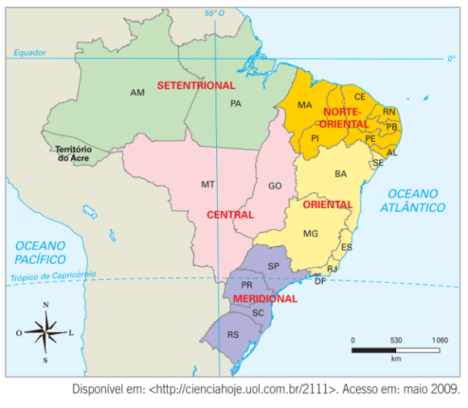
Está bem, mas mudou muita coisa comparado ao mapa de hoje? Temos que observar atentamente o mapa elaborar
essa análise. A região Norte, que era chamada de Setentrional só tinha dois Estados e um território.
Amazonas, Pará e o território do Acre, recém comprado da Bolívia. Na região Central só havia dois Estados:
Goiás e Mato Grosso. São Paulo fazia parte da região Meridional, outro nome para Sul com Paraná, Santa
Catarina e Rio Grande do Sul. A Bahia estava na região Oriental junto com Rio de Janeiro (que era a capital
do país na época), Minas Gerais e Espírito Santo. Já a região Norte-Oriental era formada pelo Maranhão,
Piauí, Ceará, Rio Grande do Norte, Paraíba, Pernambuco, Alagoas e Sergipe, praticamente o que é atualmente.
Como o governo queria incentivar o povoamento para o interior do país foi criado na década de 1930 o IBGE,
que é o Instituto Brasileiro de Geografia e Estatística.
Após muitas reuniões com várias propostas, o IBGE resolveu modificar um pouco a proposta anterior e lançar um
nova versão na década de 1940.
Divisão regional do Brasil em 1945
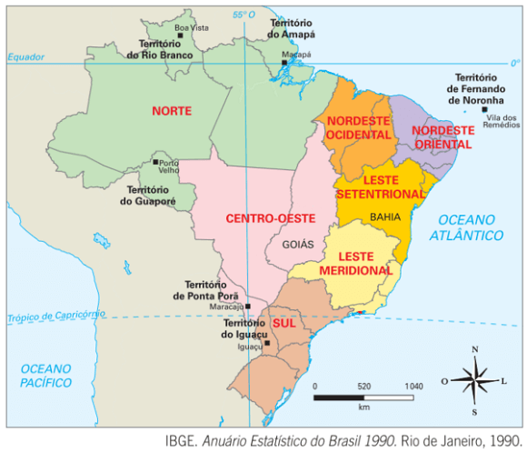
Nessa proposta houve muita alteração. Por exemplo, na criação de diversas territórios federais como o de
Fernando de Noronha, do Amapá, de Rio Branco, do Guaporé, de Ponta Porâ, do Iguaçu, quer dizer muita
divisão. Mais as mudanças não pararam por ai. Veja você mesmo no mapa:
Divisão regional do Brasil em 1960
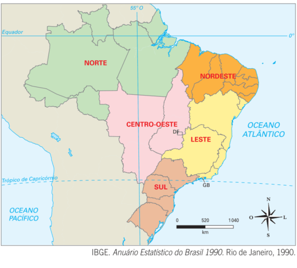
A inauguração da Capital de Brasília, como já vimos para contribuir para a integração nacional em 1960 marcou
essa regionalização.
Além disso, Guaporé se transforma em Rondônia, Ponta Porâ foi incorporado no Mato Grosso e Iguaçu ao Paraná.
Criação do Estado do Guanabara com a capital em Niterói.
A configuração com a qual estamos acostumados começa a ganhar forma. Como o IBGE fazia essa divisão? Bom,
eles utilizavam as características homogêneas de uma região, por isso era chamada de Região homogênea (as
características que eram comuns na área). Através das médias estatísticas dos dados espaciais como renda,
mortalidade, clima ou vegetação para se tentar criar uma divisão regional mais científica.
Um dos principais problemas dessa regionalização é que ela desconsidera o fata de que os fenômenos naturais e
sociais não coincidem com os limites dos Estados. Porém, o objetivo dessa regionalização que foi se
aprimorando ao longo do tempo, desde 1940, partiu da necessidade de identificar os diferentes espaços
existentes no país com seus respectivos potenciais de recursos e aspectos socioeconômicos, para promover uma
melhor inserção no mercado nacional emergente.
Vejamos o mapa atual do território brasileiro. Você ainda acha que estudar geografia é decorar capitais?
Divisão regional do Brasil a partir da Constituição de 1988
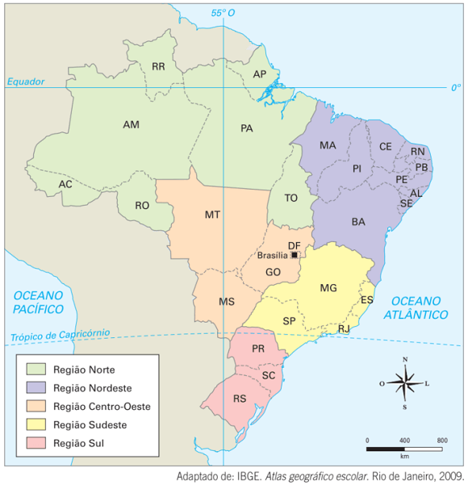
Após a redemocratização do país e aprovação da Nova Constituição em 1988, o território brasileiro se
consolida nas suas atuais fronteiras. Para chegar até aqui foi preciso muita discussão e decisões técnicas e
políticas. Vejamos algumas delas.
Em primeiro lugar o território do Acre foi finalmente reconhecido ou elevado à categoria de Estado. Rio
Branco passa a ser Roraima e ocorre a fusão dos Estados da Guanabara e do Rio de Janeiro com a transferência
da capital de Niterói para a cidade maravilhosa. O Estado do Mato Grosso era enorme, então foi dividido com
a criação do Estado do Mato Grosso do Sul em 1977, para um país isso é bem recente. Rondônia também se
transformou em Estado e foi criado Tocantins e anexado à Região Norte. E Fernando de Noronha foi anexado ao
Estado de Pernambuco. Chegamos a essa configuração, conforme o mapa e a tabela abaixo:
A primeira observação sobre essa divisão regional (na próxima aula vamos analisar a distribuição da
população) do IBGE é a de que ela não é muito rigorosa, pois os limites das Regiões coincidem com aqueles
dos Estados, o que não é verdadeiro na realidade. Um rio não tem preferência sobre qual Estado ele tem seu
curso.
A Floresta Amazônica, por exemplo, é muito maior do que o Estado do Amazonas, prolonga-se para outros Estados
e inclusive países, como Maranhão, Mato Grosso, Pará, Tocantins, Rondônia, Roraima, e as nações vizinhas
como o Peru, Colômbia, Bolívia, Equador e Venezuela, Guiana, Suriname e Guiana Francesa. Vejamos o mapa:
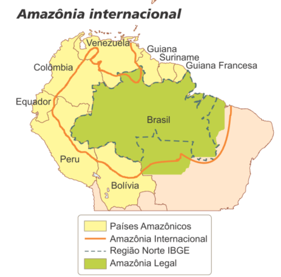
Outra região que se enquadra nesse exemplo é a do Polígono das Secas no sertão nordestino. Ela abrange não
somente a região Nordeste oficial, mas o norte de Minas Gerais. O Norte do Paraná igualmente tem mais
relação com São Paulo, tanto pela colonização, como economicamente, do que o restante dos Estados do Sul do
Brasil. Mato Grosso do Sul também possui essa ligação com São Paulo mais intensa e pertence à Região
Centro-Oeste.
Outra dificuldade da atual divisão regional é que o território nacional é muito extenso e pouco povoado no
seu interior. A realidade do movimento populacional, ou seja, das migrações dificulta uma regionalização
muito ligado aos elementos naturais. Com a expansão das fronteiras agrícolas, quer dizer o
avanço da produção agropecuária sobre o meio natural com a derrubada de florestas e mudanças nas paisagens
naturais são bastante dinâmicas. E o IBGE já não possui tanta infraestrutura para acompanhar essas
transformações, sendo uma órgão mais ligado à coleta das informações do que ao planejamento intenso do
território como já foi.
Agora vamos parar e pensar um pouco sobre tudo isso. Quais as vantagens e desvantagens dessa regionalização
do IBGE? O que você acha que vai ocorrer no futuro? Hoje o Brasil tem vinte e seis Estados e mais o Distrito
Federal na sua divisão político-administrativa. Novos Estados serão criados? Por que? Como e quando? Existem
já projetos para isso no Congresso? Uma divisão em regiões menores seria mais adequada?
São questões muito importantes para o desenvolvimento da sociedade e do território. Não há como separar um do
outro. E as outras formas de regionalização do Brasil? É o que veremos a seguir.
Reforce seu conhecimento
Selecione os conceitos com as imagens correspondentes e relacione as capitais com seus Estados:
Regionalização
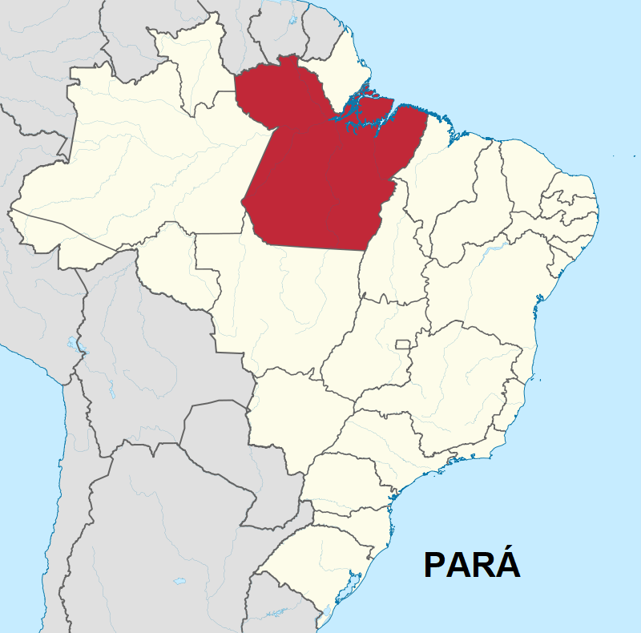
Belém
Rio Branco
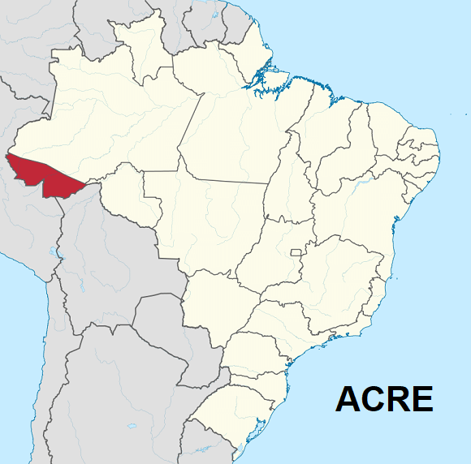
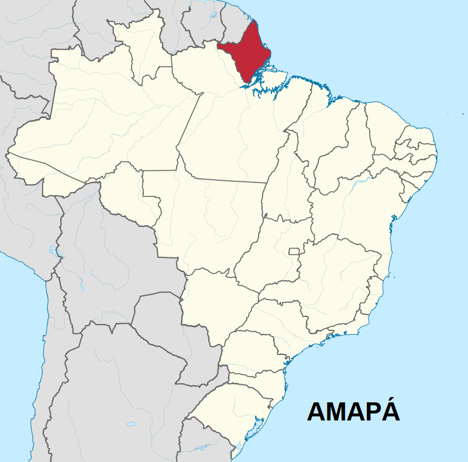
Macapá
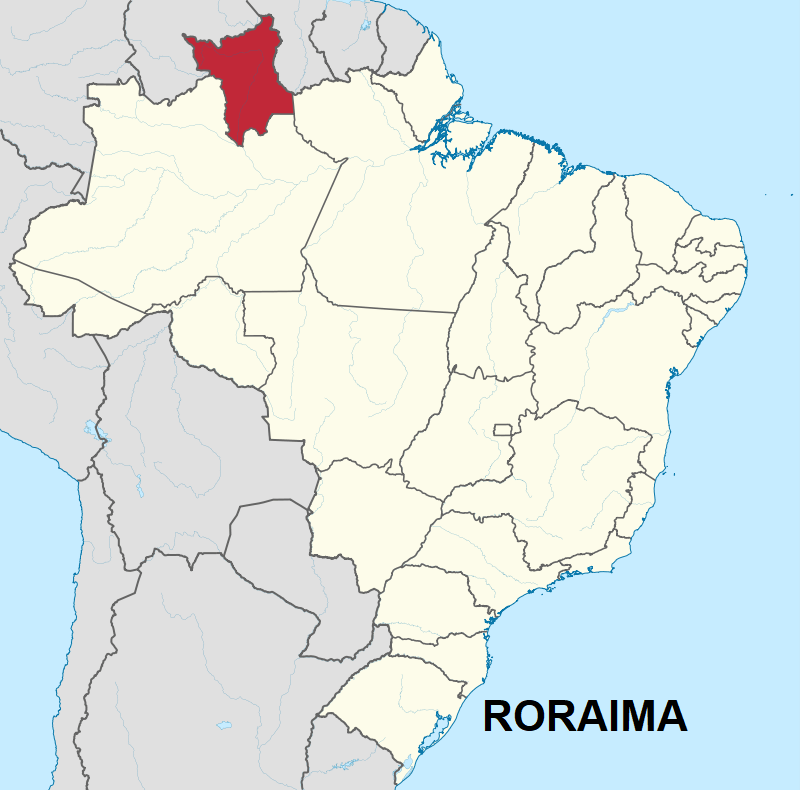
Boa Vista
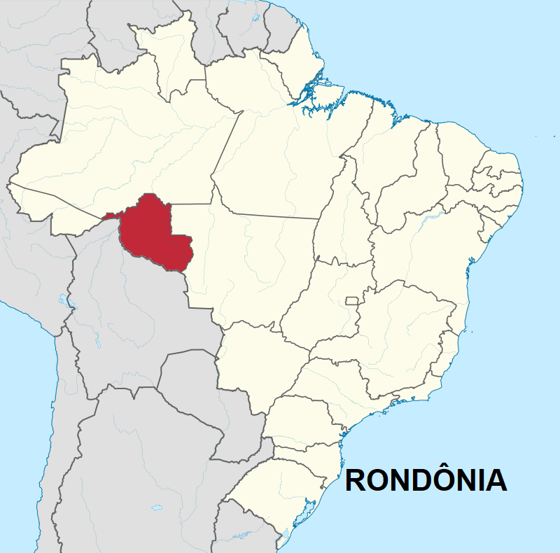
Porto Velho
A regionalização Geoeconômica
Outro critério utilizado para dividir o Brasil em regiões baseia-se histórico-econômica do país. O geógrafo
Pedro Geiger organizou na década de 1960 as regiões geoeconômicas e dividiu o país em três
áreas extensas: Amazônia, Nordeste e Centro-Sul. Ela não é a oficial mas considera também a recente
modernização econômica que ocorreu no espaço urbano e no campo e estabeleceu novas formas de vínculo entre
os lugares do território brasileiro.
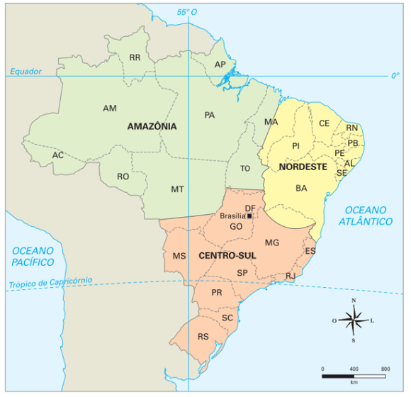
Fonte: Fonte: Vesentini (2013).
A região Amazônica compreende toda a extensão da floresta Amazônica localizada em território
brasileiro. Integrada por todos os estados da região Norte, além do Mato Grosso (exceto sua porção sul) e
Oeste do Maranhão. É uma região que apresenta baixa densidade demográfica e foi a última grande região do
país a ser ocupada.
As atividades econômicas desenvolvidas são: a agropecuária, que constitui o setor econômico mais importante,
extrativismo vegetal, mineração e o setor industrial, com destaque para a zona industrial de Manaus.
A região do Centro-Sul ou o complexo regional do Centro-Sul abrange a quase um terço do
território nacional, compreende aos estados das regiões Sul e Sudeste (exceto o extremo norte de Minas
Gerais), ao estado de Goiás, Mato Grosso do Sul, extremo sul do Mato Grosso (marco da fronteira
agropecuária) e extremo sul do Tocantins.
É o complexo regional mais desenvolvido economicamente, abriga a maior parte do parque industrial, das áreas
de atividades agrícolas mais modernas, dos bancos, mercados de capitais, empresas transnacionais, comércios
e universidades do país. É extremamente urbanizado.
A região Nordeste nessa regionalização geoeconômica vai desde a porção leste do Maranhão até
o norte de Minas Gerais, incluindo todos os estados nordestinos. Abrange cerca de 30% do território
nacional.
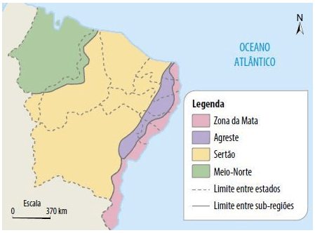
É a região onde ocorreu o processo de povoamento do país. Possui grandes contrastes naturais e
socioeconômicos entre as áreas litorâneas, mais urbanizadas, industrializadas e desenvolvidas
economicamente, e o interior com predomínio de clima semiárido e grandes problemas sociais. As atividades
são desenvolvidas no: Zona da mata, Agreste, Sertão e Meio-Norte.
Zona da Mata - Predominam as grandes propriedades agrícolas que praticam a monocultura canavieira
destinada para a exportação do açúcar. Além da cana, ocorre o cultivo do cacau e do fumo. Destaca-se
também a produção de sal marinho, principalmente no Rio Grande do Norte.
Agreste - A principal atividade econômica nos trechos mais secos do agreste é a pecuária extensiva;
nos trechos mais úmidos é a agricultura de subsistência e a pecuária leiteira.
Sertão - Pecuária extensiva e de corte, agricultura (milho, feijão e cana-de-açúcar) e o cultivo
irrigado de frutas e flores. Nas áreas litorâneas ocorre a extração de sal. Também há a presença de
indústrias (polo têxtil e de confecções).
Meio Norte - Extrativismo vegetal, agricultura tradicional de algodão, cana-de-açúcar e arroz.
Teste seu conhecimento
Assinale todas as alternativas que satisfazem as características da regionalização do IBGE:
A regionalização a partir do meio técnico-científico-informacional – Os “Quatro Brasis”
Essa divisão regional se baseia na difusão do meio técnico-científico-informacional,
conceito elaborado pelo geógrafo Milton Santos. Trata, além de outras coisas, da informação e das finanças e
como essas variáveis estão irradiadas de maneiras desiguais e distintas pelo território brasileiro. É
chamada de "quatro brasis". É dividida em: Região Concentrada, formada pelo Sudeste e Sul, o Nordeste, O
Centro-Oeste e a Amazônia.
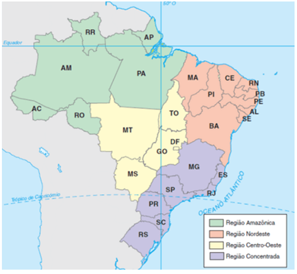
O critério para estabelecer essa nova regionalização é diferente das outras pois se baseia no conceito de
meio-técnico-científico-informacional. É como ver o território pelo acréscimo de ciência, tecnologia e
informação. Quais regiões apresentam melhores infraestruturas que permitem um fluxo maior de capital,
dinheiro, informação e outras regiões ou cidades em que o tempo é mais lento e a comunicação não é
igualmente veloz. É como ver o território à noite e observar a presença de iluminação distribuída
desigualmente por toda sua extensão, com diferenças entre as regiões. Há áreas com poucas densidade
industrial, internet e comunicação, enquanto há outras com rodovias modernas, produção e distribuição de
produtos de forma eficaz em rede pelo território.
A Região Concentrada une as regiões Sul e Sudeste devido a maior densidade do
meio-técnico-científico-informacional representado pela intensa urbanização, padrão de consumo, atividades
ligadas ao setor de finanças, assistência técnica e mais adaptada a globalização do que outras regiões.
A cidade de São Paulo comanda esse processo sendo o polo nacional dessas atividades. A posição de São Paulo
na vida econômica nacional é muito relevante e sua influência ultrapassa a região metropolitana. Sem falar
na sede de eventos de todos os tipos, culturais, econômicos e com a presença de tecnologia e pesquisa tanto
na cidade como no campo. A metrópole paulista comanda o território por concentrar à informação, os serviços
e a tomada de decisões.
Nessa regionalização há regiões que ganham e outras que perdem. Por exemplo, a fuga de indústrias do chamado
ABCD paulista, localizado na região metropolitana de São Paulo, para o interior ou para outros Estados que
oferecem mais vantagens como isenção de impostos, doações de terreno, dentre outros fatores. Nesse sentido a
região Sul ganha esses estabelecimentos e São Paulo conhece um empobrecimento em pleno período da
globalização.
Outra característica dessa região é a intensa mecanização do campo como o exemplo da produção de laranja,
cana-de-açúcar no Estado de São Paulo para a exportação de suco e produção de álcool. Aviação agrícola,
controle de pesticidas com fertilizantes produzindo mais com em áreas cada vez menores. Além da alta
densidade de supermercados, Shopping-centers, atividades de saúde, ensino e lazer.
Na região Centro-Oeste sob esta perspectiva, acrescida agora com o Estado do Tocantins, além
de Mato Groso, Mato Grosso do Sul e Goiás temos uma ocupação mais recente. A principal característica dessa
região é a implantação do meio-técnico-científico-informacional sob um meio natural para a constituição de
uma agricultura moderna, com fazendas mecanizadas e a produção globalizada de soja, milho, algodão, arroz, e
da pecuária de corte para exportação de carnes.
A região Nordeste que inclui os nove Estados igualmente a regionalização do IBGE: Maranhão,
Piauí, Ceará, Rio Grande do Norte, Paraíba, Pernambuco, Alagoas, Sergipe e Bahia. É a região que apresenta o
traço mais forte da colonização por ser a primeira de povoamento europeu e foi a principal região econômica
do Brasil colonial com importantes cidades como Salvador (era capital), Recife e São Luís. O meio
técnico-científico-informacional se deu de forma pontual e pouco densa, isto é, espalhado em razão das
atividades que se praticava nessa área como uma agricultura pouco intensiva devido a estrutura das
propriedades na época. O trabalho na agricultura apresenta um índice menor de mecanização do que na Região
Concentrada. A urbanização também não é tão intensa e a rede de cidades ainda reflete as marcas do passado.
Claro que há exceções, como em tudo na ciência.
Existem áreas bastante tecnificadas porque são atividades voltadas para o comércio externo e atende
requisitos globalizados como as áreas irrigadas do vale do Rio São Francisco com produção de manga, uva e
vinhos durante todo o ano.
A Amazônia nesta perspectiva de regionalização é aquela região sem o Estado de Tocantins,
porém com o Pará, Amapá, Roraima, Amazonas (o Estado), Acre e Rondônia. É uma região pouco povoada, ou seja,
baixa densidade populacional (menos de um habitante por quilômetro quadrado) e baixa densidade técnica. A
circulação, predominantemente, ocorre por vias fluviais e aéreas para a interligação entre os lugares. O
meio natural nesta região ainda possui uma relevância extraordinária. As hidrovias como a Madeira-Amazonas
por exemplo, servem para o escoamento de soja do Mato Grosso e Rondônia.
A capital Manaus seria um ponto no território onde se concentram uma fluidez ligada à globalização com
conexões mais dinâmica devido à Zona Franca de Manaus como polo industrial.
×
"Uma área de livre comércio de importação e exportação e de incentivos fiscais especiais,
estabelecida com a finalidade de criar no interior da Amazônia um centro industrial, comercial e
agropecuário dotado de condições econômicas que permitam seu desenvolvimento, em face dos
fatores locais e da grande distância, a que se encontram, os centros consumidores de seus
produtos”. Decreto de Lei nº 288, de 28 de fevereiro de 1967.
É uma região contraditória, pois ao mesmo tempo em que há pouca conhecimento ainda sobre os reinos vegetal e
animal da sua enorme extensão, tem-se um monitoramento por modernos satélites e radares.
Ao final desse curso sobre a Geografia do Brasil retomaremos com mais profundidade as
características das regiões brasileiras realizando uma síntese de suas dinâmicas.
Reforce seu conhecimento
Selecione os conceitos com as imagens correspondentes e relacione as capitais com seus Estados:
Maceió
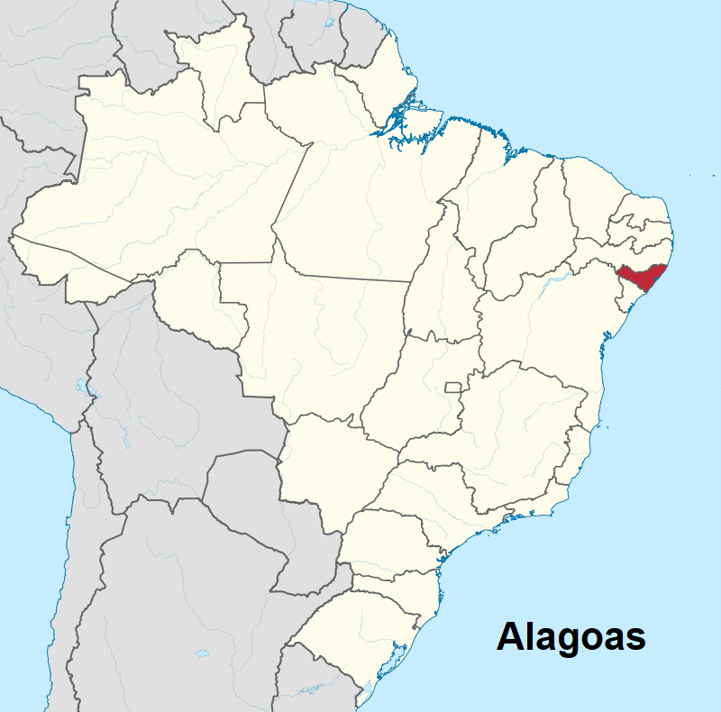
Meio-técnico-científico-informacional
Regionalização Geoeconômica
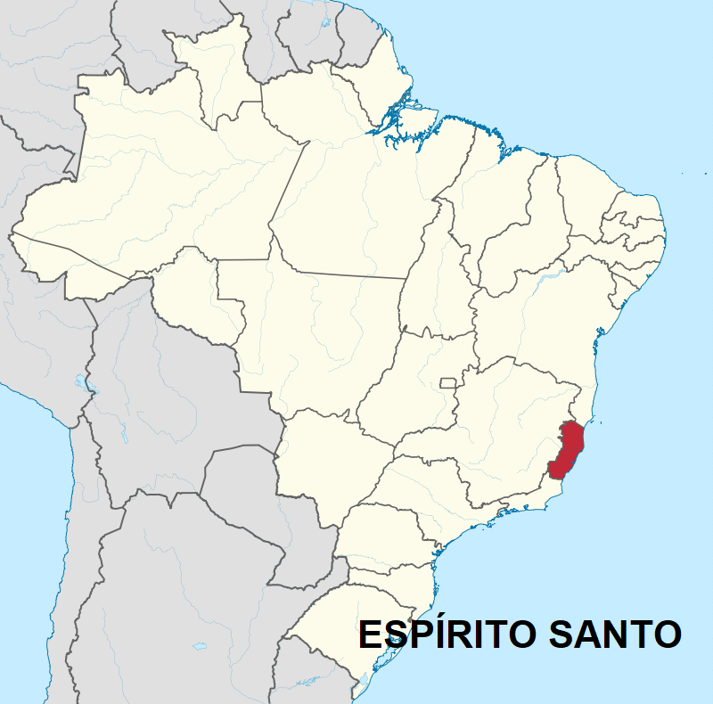
Vitória
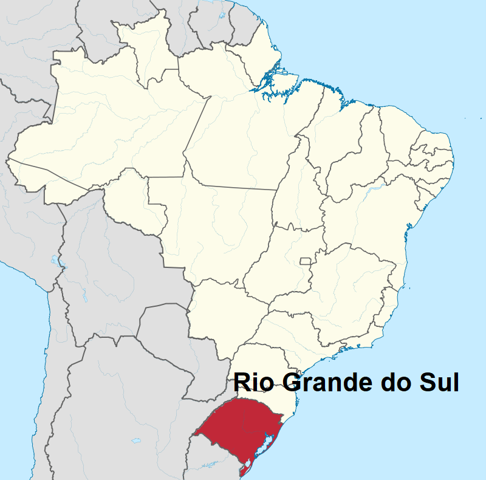
Porto Alegre
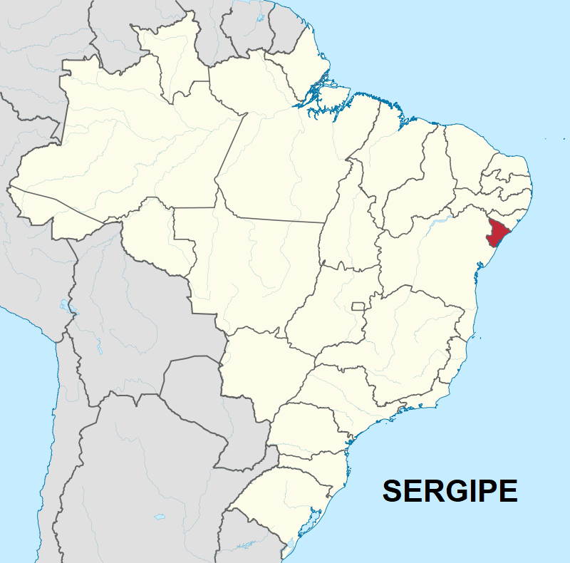
Aracaju
Não existe pergunta boba! A Ciência é feita de perguntas!
P:
Por quanto tempo vai durar a divisão territorial do Brasil?
R: Quando estudamos o Brasil e vemos a maneira pela qual a maioria da
população tem ou deveria ter acesso aos bens necessários à uma vida digna, principalmente nas
periferias, podemos começar a questionar a razão de um município, Estado ou região ser do jeito que é. O
recorte atual do Brasil significa o que para a maioria da população? Ele deve ser permanente, rígido,
imutável para sempre? Vimos na história do Brasil os diversos movimentos para modificar seus limites
internos com amplas revoltas e guerras internas. Se cada época cria necessidades novas, também
precisaríamos de novos recortes territoriais para atender a sociedade. Como sabemos, a Geografia
preocupa-se com a sociedade e seu entorno, seu território. Se as regiões são desarticuladas, perpetuam a
pobreza, novos problemas da mesma forma, requerem novas soluções e o território não pode ficar
“congelado” no tempo sob o risco de vivermos em uma espaço cada vez mais desigual.
P:Qual a relação entre os mapas e o estudo do território
brasileiro?
R:
Vimos inúmeros mapas e esse conhecimento está relacionado a Cartografia. A Geografia usa a Cartografia
como uma linguagem para revelar as relações sociais que ocorrem com o território. Os mapas nos permitem
visualizar adequadamente os problemas do país como áreas vazias de escolas, postos de saúde em
determinada cidade ou região. Nas cidades podemos constatar as desigualdades entre o centro e a
periferia, a faltar de saneamento básico, de bens culturais e de lazer. Tudo isso está mapeado,
inclusive por satélites modernos. Com toda essa informação é possível tomar decisões políticas para
satisfazer as necessidades atuais da sociedade.
P: Por que no Brasil se diz que há três poderes?
R:
Artigo 2º da Constituição Federal diz o seguinte: São Poderes da União, independentes e harmônicos entre
si, o Legislativo, o Executivo e o Judiciário.
O Executivo, o Legislativo e o Judiciário são poderes interdependentes, ou seja, devem trabalhar
coordenados entre si e fiscalizar uns aos outros.
O Executivo é a instância de poder político que executa as leis e cuida da
administração. É exercido, no plano federal, pelo presidente com seus ministros; tem sede no Palácio do
Planalto. Em nivel estadual, é exercido pelos governadores e secretários e, na esfera municipal, pelos
prefeitos e secretários.
O Legislativo é o poder encarregado de fazer as leis. Em nivel federal, é exercido pelo
Congresso Nacional, composto pelo Senado e pela Câmara dos Deputados. Em nível estadual, é exercido pela
Assembleia Legislativa e, nos municípios, pela Câmara de Vereadores.
O poder Judiciário é o poder encarregado de fazer com que as leis sejam cumpridas,
garantindo os direitos dos indivíduos. Tem sede no Supremo Tribunal Federal, em Brasília. Além do
Supremo Tribunal Federal, é exercido pelo Superior Tribunal de Justiça, pelos tribunais eleitorais, de
justiça e do trabalho, entre outros órgãos.
Desafio em grupo: Exposição de ideias sobre a jornada do herói.
Você conhece a Jordana do Herói? Tenho certeza que já assistiu inúmeros filmes e jogou diversos jogos com
essa forma de contar histórias.
Trata de um padrão narrativo que está presente em Star Wars ou Harry Potter por exemplo. O herói deve deixar
sua comunidade e partir em uma jornada perigosa, geralmente para recuperar algo (ou alguém) valioso.
Comente com seu professor(a) de língua portuguesa sobre o livro: O Herói de Mil Faces de Joseph Campbell e
sobre A Jornada do Escritor de Christopher Vogler. Neste último está descrito os passos para desenvolver
qualquer história, seja para games, filmes ou quadrinhos.
Instruções
Com seu grupo da aula anterior, vamos discutir os passos para elaborarmos a história do nosso jogo
sobre a Geografia do Brasil. Nas próximas aulas vamos nos aprofundar nesses tópicos:
Leia os passos sobre a jornada do herói abaixo e reflita sobre algum game ou filme em que vislumbrou
alguns desses passos;
Anote algumas ideias no caderno sobre o jogo que iremos desenvolver com sua turma. Não se preocupe
com correções nesse momento, deixe sua criatividade aflorar;
Apresente para a turma algumas de possíveis ideias para o jogo;
Tempo de atividade 25 minutos.
A Jornada do Herói
Fonte: Organizado pelo autor.
1. Mundo Comum do herói é estabelecido. Sua vida cotidiana e seu ambiente são
introduzidos. No Final Fantasy, a alusão ao mundo comum aparece na frase de abertura: “Era um dia como
outro qualquer”.
2. Chamado à Aventura: O herói conhece um mundo alternativo e é chamado a partir em uma
busca ou jornada. Nessa seção, o mundo alternativo, ou especial, é apresentado ao personagem principal.
Normalmente, há alguma espécie de intersecção de elementos do mundo alternativo com o mundo comum e o
personagem principal é chamado a ingressar nessa realidade alternativa e embarcar em uma busca ou
jornada.
3. Recusa ao Chamado O chamado é rejeitado porque o herói não está disposto a sacrificar
sua vida confortável e seu ambiente familiar. O herói, porém, sente‑se desconfortável com essa recusa.
4. Encontro com o Mentor: O herói recebe informações que são relevantes para a busca e
para a sua necessidade pessoal de partir nessa jornada.
5. Superando o Primeiro Obstáculo: O herói abandonou sua recusa inicial por causa das
informações recebidas. O herói embarca na jornada, aceita a aventura e ingressa no mundo especial. Essa
seção geralmente corresponde ao final do Ato I em uma narrativa tradicional.
6. Testes, Aliados e Inimigos A determinação do herói é testada por meio de uma série de
desafios. Durante esse período, o herói encontra aliados e inimigos. Essa etapa constitui a ação
principal da maioria das narrativas. É quando o herói precisa solucionar problemas, enfrentar seus
temores, salvar outras pessoas e derrotar inimigos. Essa seção normalmente corresponde ao início do Ato
II em uma história.
7. Chegada à Caverna Mais Interna Mais testes e um período de
supremo fascínio ou terror.. A provação começa a ser preparada.
8. Provação: O herói enfrenta seu maior desafio até aqui. Ele deve derrotar o “grande”
vilão. Nessa fase, o herói mostra vulnerabilidade (por exemplo, Super‑Homem e kriptonita), e não está
claro se vencerá ou fracassará.
9. Recompensa (Posse da Espada) Parece ser o fim da história, mas não é! Essa seção
corresponde ao final do Ato II da história.
10. O Caminho de Volta Quando a provação termina, o herói pode optar entre permanecer no
mundo especial ou voltar ao mundo comum. Na maioria dos casos, ele decide regressar. Essa seção
corresponde ao início do Ato III da história.
11. Ressurreição: O herói deve enfrentar a morte mais uma vez, em outra provação, que é
conhecida como o clímax. É aqui que o herói mostra que foi transformado pela jornada e ressuscitou como
uma pessoa plenamente formada. Durante essa etapa, o vilão pode ressurgir repentinamente. (Nos filmes de
terror, é o momento em que a plateia grita para o personagem principal: “Olhe para trás! Ele ainda não
está morto!”) É também onde o narrador pode incluir um “final surpresa” inesperado. Talvez o vilão não
seja realmente um vilão. Talvez o mentor seja um impostor. (Yoda poderia ser mau? Hummm...).
12. Retorno com o Elixir: O herói finalmente volta para casa, mas a experiência o
alterou irremediavelmente. Se agora é um herói, ele traz consigo um elixir do mundo especial que ajudará
aqueles que ele havia originalmente deixado para trás. A estrutura é circular, com o herói voltando ao
princípio. Isso facilita a comparação entre o “antes” e o “depois” pela audiência para perceber como o
herói foi transformado. A estrutura circular também permite deixar o final em aberto. O herói será
convocado novamente no futuro? O inimigo foi realmente derrotado? Há outra ameaça no horizonte? O herói
conseguirá descansar algum dia? Deixar perguntas como essas em aberto — em vez de optar por um final em
que tudo se esclarece — intriga a audiência e cria espaço para uma continuação. E se o herói fosse
transportado inesperadamente de volta para o mundo artificial bem no final da história? O personagem
principal do filme De Volta para o Futuro, Marty McFly, descobre no final que sua jornada ao passado
alterou substancialmente o futuro.
Ele deve atender a um novo chamado e viajar para o futuro para salvar sua família do desastre. Na
reviravolta de último minuto do enredo de Half‑Life, o personagem principal, Gordon Freeman, está
prestes a escapar quando é abordado pelo “homem de preto”, que lhe propõe uma difícil escolha.
MARIANO, Maryelle Florêncio (et al.). Geografia do Brasil Londrina: Editora e
Distribuidora Educacional S.A., 2018.
SANTOS, Mílton. O pais distorcido: o Brasil, a globalização a cidadania. São Paulo:
Publifolha, 2002.
SANTOS, Milton.; SILVEIRA, Maria Laura. O Brasil: território e sociedade no início do
século XXI. 4.ed. Rio de Janeiro: Record, 2002.
SANTOS, Patrícia Cardoso dos (et al.) Enciclopédia do Estudante: geografia do Brasil:
aspectos físicos, econômicos e sociais. São Paulo: Moderna, 2008.
VESENTINI, José William. Geografia o mundo em transição. Ensino médio. 2. ed. – São Paulo:
Ática, 2013.